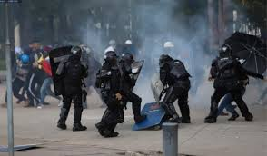
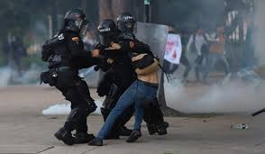

Paro nacional en Bogotá: disturbios entre Esmad y estudiantes de la U. Nacional
Hacía las 3:00 p.m. de este sábado, las movilizaciones pacíficas se vieron empañadas por los enfrentamientos entre manifestantes y miembros de la Fuerza Pública en la sede de la Universidad Nacional, que se encuentra cerrada. Eso no fue impedimento para que estudiantes ingresaran a las instalaciones de la institución, saltándose las rejas que la rodean. Tras esto, agentes del Esmad arremetieron contra la protesta.
Pese a que las primeras horas de esta segunda jornada de marchas en Bogotá habían transcurrido de manera pacífica, luego del mediodía los protagonistas fueron los disturbios y enfrentamientos entre manifestantes y la Fuerza Pública. Choques que incluso han causado afectaciones viales, pues ocasionaron un accidente de tránsito en las inmediaciones de la U. Nacional.
Las manifestaciones han sido acompañadas por los Gestores de Convivencia de la Secretaría de Gobierno de Bogotá, quienes han tratado de evitar que los actos vandálicos se presentes. Por fortuna, hasta ahora no se han reportado heridos de gravedad, aunque varios manifestantes sí han resultado afectados por los gases lacrimógenos que el Esmad ha lanzado tanto dentro como fuera de las instalaciones de la institución.
Según un reporte de la Secretaría de Movilidad, en el Monumento de los Héroes también se presenta otra manifestación que llegó hasta el Parque Nacional. La protesta está generando afectaciones en la carrera Séptima, sentido norte – sur. Durante una hora, las estaciones Aguas y Museo del Oro suspendieron las actividades, sin embargo, ya se retomaron las funciones en ambos puntos.
